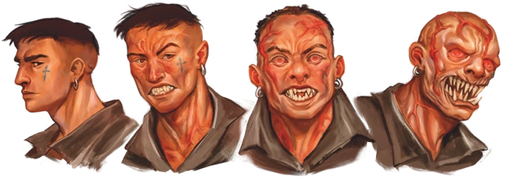

O Sangue é a entidade do sentimento. Ele busca a intensidade: dor, obsessão, paixão, amor, fome, ódio - tudo que envolve sentir uma emoção extrema agrada a entidade de Sangue.
Os sentimentos extremos do Sangue superam a razão e a calmaria do Conhecimento. -Diário de Deus
Esse elemento está relacionado a emoções extremas, como fome, dor, amor, ódio, paixão e obsessão. As cores que representam o Sangue são tons de vermelho.
Ao transcender com 55% de Exposição Paranormal, Arthur Cervero se comunica com a entidade de Sangue. Nesse momento ele consegue ver um oceano vermelho que parece não ter fim se espalhando pelos céus. Enquanto Arthur observava esse oceano invertido, formado por ondas de um líquido agressivo que emite sons de rosnados, ele é invadido por um fluxo de sentimentos terríveis e intensos.
Afinidade com o Elemento
Possuir uma afinidade com o elemento do Sangue significa ser escolhido pela sua Entidade. Quanto maior a afinidade de um ocultista com a Entidade de Sangue, maior sua proximidade de uma criatura bestial. Dentre as outras várias consequências disso, é possível citar: Sentidos aguçados, maior sensibilidade à dor, veias saltadas, olhos vermelhos, dentes e unhas afiadas, e diversas alterações na estrutura corporal, além de uma personalidade mais sentimental, agressiva e impulsiva.

Rituais
Os rituais de Sangue sempre estão associados a alterações físicas e agressivas, com resultados nojentos e brutais. Alguns requisitos para conjurar rituais de Sangue realçam a ideia de sentir dor, sendo eles auto mutilação, derramamento de sangue e uso de órgãos humanos ou animais.
Os efeitos dos rituais também estão ligados a condições específicas, como o Ritual de Paralisia de Sangue, que deixa a pessoa a qual o ritual foi conjurado em um estado de paralisia e fazendo com que ela só possa resistir à sua influência. O Ritual de Descarnar faz com que a pele do alvo seja despedaçada de uma forma muito dolorosa, frisando o sentimento de dor.
Criaturas
As criaturas de Sangue são bestiais, agressivas e nojentas, sendo em sua grande maioria cegas, porém com os outros sentidos extremamente aguçados, principalmente o tato. Essas entidades apresentam sempre uma cor avermelhada, e, em sua grande maioria, uma pele exposta, com garras e dentes afiados, juntamente de um líquido repugnante e espesso, similar, porém diferente, ao sangue humano.
O comportamento dessas criaturas mudou ao longo das temporadas, passando a ser cada vez mais bestial, atacando fisicamente qualquer um que estiver em seu alcance. Até o momento, tais criaturas não tem sido vistas realizando rituais, possivelmente pelo fato do Sangue representar o odio puro, tornando as criaturas incapazes de fazer algo além de atacar. As criaturas de Sangue também são as que mais sentem dor, entre as dos outros elementos.